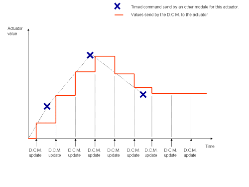
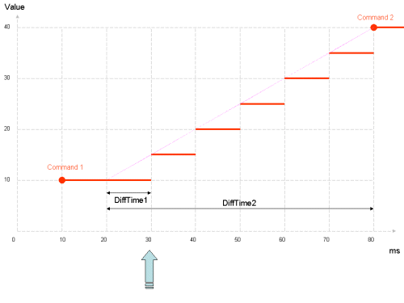
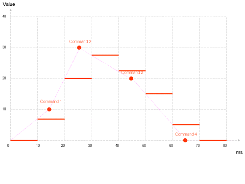

Note
To be more precise, the Preferences files are read by the DCM module, but they are visible throughout ALMemory. See below for more details.
When other modules want to access actuators and sensors of the robot, they have two solutions:
For sensors, modules need to look into ALMemory with the name of the subDevice sensor (or use a callback). For most sensors, the DCM updates automatically sensors values in ALMemory, and the module just needs to look at the new value. Some sensors (UltraSound...) need a request to an actuator to have a value updated.
For actuators, modules need to send an update request to the DCM, with a timed command (see the Timed command section). It is not allowed for other modules to change any DCM value in ALMemory directly. They need to ask the DCM first. Then the DCM itself changes the actuator value in ALMemory, but only when it has an acknowledgment from the device that the command is well sent, and with the precise value actually sent to the actuator.
Note
This last feature is still in development. Right now the value is updated directly, even if there is no acknowledgment. But you can check the ACK/NACK value to see if the device is responding.
Note
The value sent by the DCM to the actuator may not be the precise value asked: the value is rounded to the actuator precision, there is also a linear interpolation, and there could be a limitation of the value (min/max due to mechanical stop, or other limitations...).
The main module that sends actuators order to the DCM is ALMotion.
Warning
The DCM itself does not have any resource management or priority system for modules. That means that every orders will be taken into account, even if they are contradictory.
The DCM has a separate real time thread that run every 10ms (known as the DCM “Cycle”). It manages every communication / actuator computation / sensor return, then goes back to sleep until the next cycle.
A timed command is a target value (one float number) to be sent to a subDevice actuator together with a time when to apply it. You can send one ore more timed command for one or more actuator in the same request.
The time is an absolute value, based on the system time in ms and stored in a 4 bytes integer. You can send a request to the DCM to get the current time (it’s also in ALMemory), or read it directly if you have a module on the robot motherboard.
The DCM stores all timed commands for each actuator, then process them at each cycle. Depending on the actuator nature, they are either used as triggers or interpolated.
The actuators suitable to interpolation include the motors (angular joint position and hand opening) and the LEDs (light intensity). For these actuators, at each cycle, the previous and next timed orders are retrieved (given the current time), and their linear interpolation is computed and sent to the appropriate device. If there is no next (future) timed order, the last one is used instead.
The following figure illustrates this behaviour. As the timed commands time do not exactly match the DCM update times, the precise corresponding values are never sent nor reached.
Currently, the ultra sound actuator is the only one to exhibit a trigger-like behaviour, which is implemented in the following way: at each cycle, the DCM executes timed commands whose time are in the past and then deletes them. Commands whose time is in the future have no impact on the current command sent to the actuator.
Note
Currently, there is a limit of 4096 timed commands stored in the DCM for each actuator.
The main advantages of timed commands are:
Note
Sending a huge number of time commands on one request may delay the DCM cycle.
Warning
The better way to use timed command is to send them with at least a 10ms delay in the future. With this delay, the DCM can compute an interpolation in its next cycle, whatever the next cycle time is.
Here is a description of the interpolation algorithm:
For each actuator, the following data are kept in memory:
At each DCM cycle, for each actuator, the following algorithm is run:
continue = True
while (continue is True and commands is not empty):
# get the next comment (they are sorted)
command = commands[0]
if (command.time >= currentTime):
# the command is right now or in the future
# after this command, we will not process the commands list further
continue = False
if (command.time =< currentTime):
# the command is in the past
# store the command data for applying it and/or for
# future interpolations
sendCommandDouble = command.value
lastCommandValue = command.value
lastCommandTime = command.time
# remove this timed command from the list
commands.pop(0)
else:
# the command is in the future
# choose the starting point for the interpolation
if (lastCycleTime < lastCommandTime):
tmpTime = lastCommandTime
tmpCommand = lastCommandValue
else:
tmpTime = lastCycleTime
tmpCommand = lastCommandDouble
# compute the interpolation
dT1 = currentTime - varLastTime
dT2 = command.time - varLastTime
sendCommandDouble = ((command.value - tmpCommand)*dT1)/dT2 + tmpCommand
sendCommandInt = round(lastCommandDouble)
lastCycleTime = currentTime
actuator.set(sendCommandInt) # send the command to the actuator
Warning
Sending 2 or more timed commands at exactly the same date (in ms) with different values will result in unpredictable result.
We suppose that there is a DCM cycle every 10ms.
The command 1 was sent to (10,10). (first number is time, second is value, like degrees for joints).
At t=30ms (or between 20 and 30) the DCM received another command at (80,40).
Here is the computation of the next cycles:
| t (ms) | dT1 (ms) | dT2 (ms) | sendCommandDouble |
|---|---|---|---|
| 30 | 30 - 20 = 10 | 80 - 20 = 60 | (40 -10)*10)/60 + 10 = 15 |
| 40 | 40 - 30 = 10 | 80 - 30 = 50 | ((40 -15)*10)/50 + 15 = 20 |
| 50 | 50 - 40 = 10 | 80 - 40 = 40 | ((40 -20)*10)/40 + 20 = 25 |
| 60 | 60 - 50 = 10 | 80 - 50 = 30 | ((40 -25)*10)/30 + 25 = 30 |
| 70 | 70 - 60 = 10 | 80 - 60 = 20 | ((40 -30)*10)/20 + 30 = 35 |
| 80 | 80 - 70 = 10 | 80 - 70 = 10 | ((40 -35)*10)/10 + 35 = 40 |
Then the value stays at 40 for the next cycles, until another command is sent.
We suppose that there is a DCM cycle every 10ms.
At t=10ms (or between 0 and 10), the DCM received 4 commands for this actuator: (15, 10) (25, 30) (45,20) and (65, 0).
Here is the computation of the next cycles:
| t (ms) | dT1 (ms) | dT2 (ms) | sendCommandDouble |
|---|---|---|---|
| 10 | 10 - 0 = 10 | 15 - 0 = 15 | ((10 -0)*10)/15 + 0 = 6.66 |
| 20 | 20 - 15 = 5 | 25 - 15 = 10 | ((30 - 10)*5)/10 + 10 = 20 |
| 30 | 30 - 25 = 5 | 45 - 25 = 20 | ((20 - 30)*5)/20 + 30 = 27.5 |
| 40 | 40 - 30 = 10 | 45 - 30 = 15 | ((20 - 27.5)*10)/15 + 27.5 = 22.5 |
| 50 | 50 - 45 = 5 | 65 - 45 = 20 | ((0 - 20)*5)/20 + 20 = 15 |
| 60 | 60 - 50 = 10 | 65 - 50 = 15 | ((0 - 15)*10)/15 + 15 = 5 |
| 70 and above | 0 |